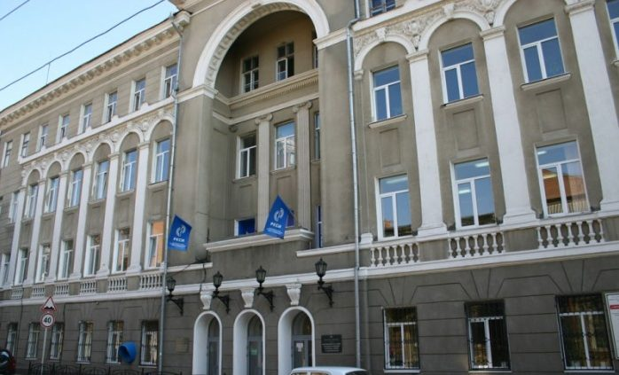
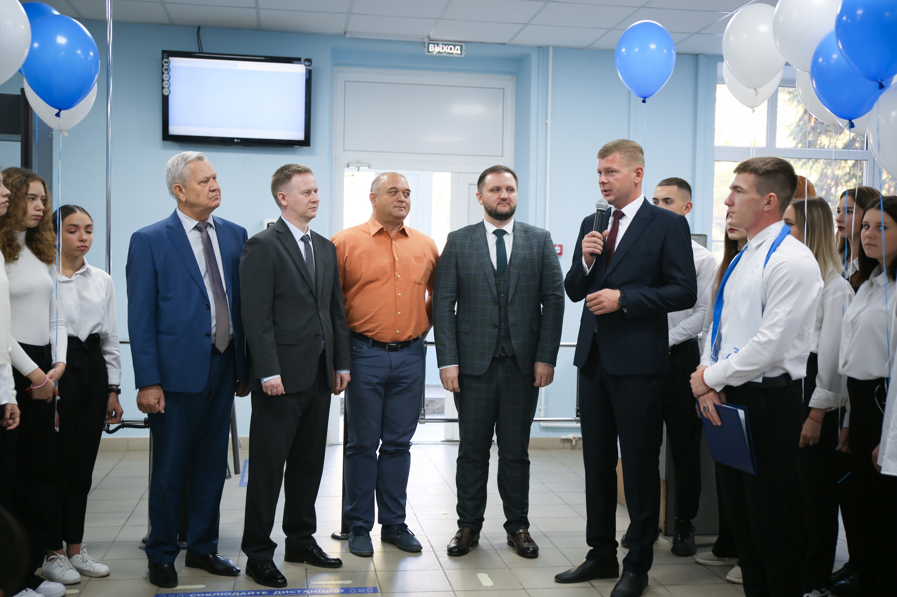

|  |
История Ростовского-на-Дону колледжа связи и информатики началась в 1930 году.
Решением коллегии при Наркомате почт и телеграфов от 15 июля был создан техникум связи.
Тогда он располагался в здании школы № 4 и имел три отделения:
«радио», «проводное», «экономическое».
В первый учебный год было принято 250 человек. |
|  |
В 1936 году он был преобразован в политехникум Наркомата связи СССР. Его директором был назначен Ф. В. Кузьмин.
В предвоенный год здесь обучалось уже более 800 студентов. В период Великой Отечественной войны политехникум связи выполнял очень важную задачу — готовил связистов, потребность в которых была очень велика. За обучение и выпуск офицерских кадров в годы войны РПТС был зачислен в список ветеранов 56-й армии и награжден «Почетным знаком». К началу сентября 1946 года в техникуме насчитывалось 768 студентов.
А 31 декабря 1939 года коллективу учебного заведения был сделан настоящий новогодний подарок — введена первая очередь учебного корпуса по улице Тургеневской, 20 (здание, где проходили занятия и располагалась библиотека, было полностью уничтожено во время войны).
С 1966 года техникум стал возглавлять А. Д. Васильченко, с 1977 года — В. Г. Павловский, c 1987 года М. Е. Рачковский, а с 1995 года по 2016 год М. Б. Стрюков.
В 2017 году приказом министерства общего и профессионального образования Ростовской области № 251к от 21 августа на должность директора ГБПОУ РО «Ростовский-на-Дону колледж связи и информатики» назначен Сергей Николаевич Горбунов. |